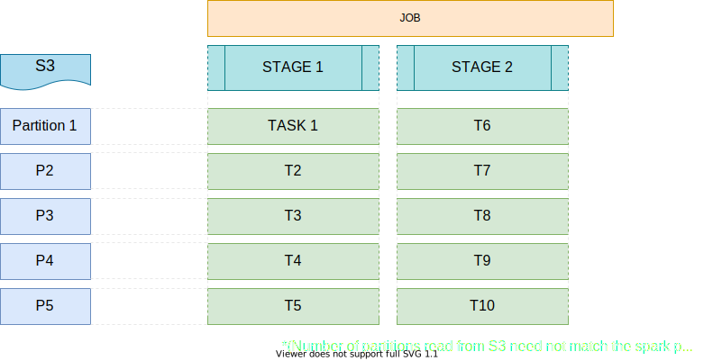
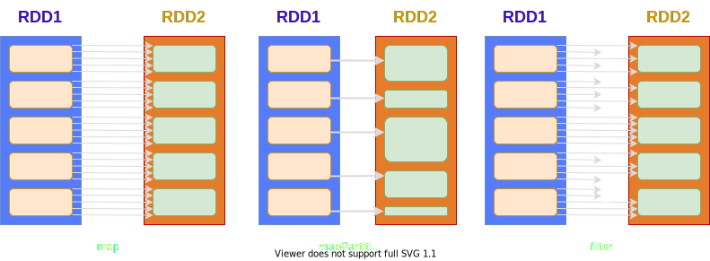
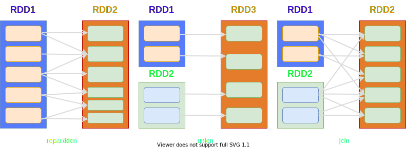
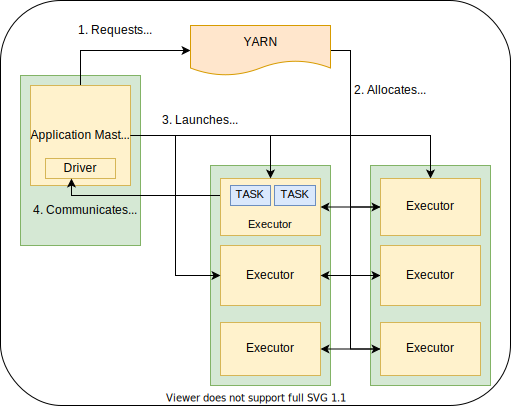

val spark = SparkSession
.builder()
.appName("Spark Basics")
.config("author.name", "kshitij-tyagi")
.getOrCreate()What is SPARK?
- Large scale data processing system.
- Distributed ⇒ Distributed Data
RDD | PARTITIONS
- Resilient Distributed Dataset.
- RDD essentially is
- an IMMUTABLE collection of elements of your data
- DISTRIBUTED across nodes in your cluster
- partitioned into PARTITIONS
- The partitions can be operated in parallel
- RDD was also the primary user-facing API in Spark since its inception.
- Uses a Row object as representation of an element.
RDD | PARTITIONS
DATASET
- “Collection of strongly-typed JVM objects”
- Dataset api comes with declarative and type-safe operators
- Safety of syntax and analysis checks at compile time
DATASET | ENCODERS
- Encoders are responsible for converting between JVM objects and the InternalRow object.
- Spark provides Encoder implementations for most of the standard types (including case classes)
- ExpressionEncoder[T] : generic encoder for jvm objects of type T
DATAFRAME
“Collection of rows with a schema that is the result of executing a structured query”
Dataframe = RDD + Schema
As of Spark 2.0.0,
type DataFrame = DataSet[Row]
TRANSFORMATIONS | ACTIONS
- Transformations are operators that transform a dataset into another dataset or and ‘intermediate’ dataset.
- Transformations are lazy.
- Actions are operators that (usually) collapse a dataset.
- Result of a transformation is not (usually) cached automatically.
TRANSFORMATIONS | ACTIONS
LINEAGE
- Set of all transformations that track the evolution of an RDD / DataSet
- Helps make the RDD fault tolerant
- Spark creates a DAG containing all the RDD with their lineage
NARROW | WIDE TRANSFORMATIONS
- Narrow transformations do not require movement of data across partitions
- Transformations such as map, mapPartition, filter, flatMap are narrow
- Wide transformations require data to be moved across partitions
- Transformations such as groupByKey, reduceByKey are wide transformations
NARROW | WIDE TRANSFORMATIONS


SHUFFLING
- Movement of data across partitions
- Triggered by wide transformations
- Data written to a ‘shuffle file’ on the map side of the transformation
- The partitions in which data is written are called ‘shuffle partitions’
JOBS | STAGES
- Each action translates to one Job.
- A Job can be composed of multiple Stages.
- A Stage is a sequence of transformations which can be performed independently.
- Typically, stage boundaries exist at shuffle boundaries.
TASKS
- Intersection of a stage and a partition.
JOBS | STAGES | TASKS

TRANSFORMATION EXAMPLES

TRANSFORMATION EXAMPLES

ACTION EXAMPLES
- count
- reduce
- foreach
- collect
- …
BASIC ACTIONS
- cache (marks the dataset for persistence)
- isEmpty
- isLocal
- printSchema
- rdd
- toDF
APPLICATION | SPARK CONTEXT
- Spark-Submit launches a separate spark application.
- An application is composed of jobs.
- An Application is generally associated with exactly one instance of SparkContext object.
- Spark Context talks to cluster manager to allocate executors.
- Spark Context sends tasks over to executors.
DRIVER | EXECUTORS
- Driver is the jvm process responsible for
- running the main method of the application.
- instantiating the SparkContext.
- creation and scheduling of tasks on executors.
- Executors are jvm processes responsible for executing tasks and communicating the results to driver.
YARN
- Cluster Mode
- Driver runs ‘as a child thread of’ Application Master.
- Client initiates the application, and periodically poll AM for status updates. Client can go away after initiation.
- Client Mode
- Driver runs in the client process.
- ApplicationMaster runs on the cluster.
APPLICATION MASTER
- Process managed by YARN
- Responsible for execution of a single application
- Asks for containers from the Resource Manager
- Launches tasks on containers
SPARK ON YARN

STRUCTURED STREAMING
- Micro batch mode buckets inputs into separate batches (sliding window)
- Continuous processing - long running tasks that continously process data.
- Each task reads from a source partition